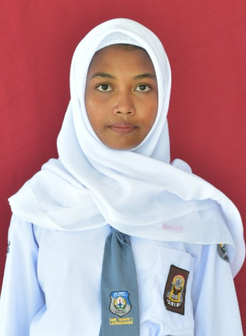

Selamat Datang di Halaman Profil Saya

| Nama Lengkap | : Zakhrofa Agniyaa |
| Tempat, Tanggal Lahir | : Bekasi,15-05-2010 |
| Jenis Kelamin | :Perempuan |
| Alamat | : Desa Banjaran,Blok Ketos Rt04/Rw01.Kab Majalengka,Kec Sumberjaya |
| Agama | : Islam |
| Nama Sekolah | : SMKN 1 LEUWIMUNDING |
| Jurusan | : Tjkt |
| : zakhrofaagniya@gmail.com |
Klik tombol di bawah ini untuk melihat repository tugas praktikum saya.
Buka Repository Praktikum